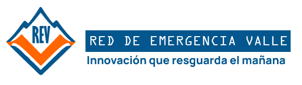
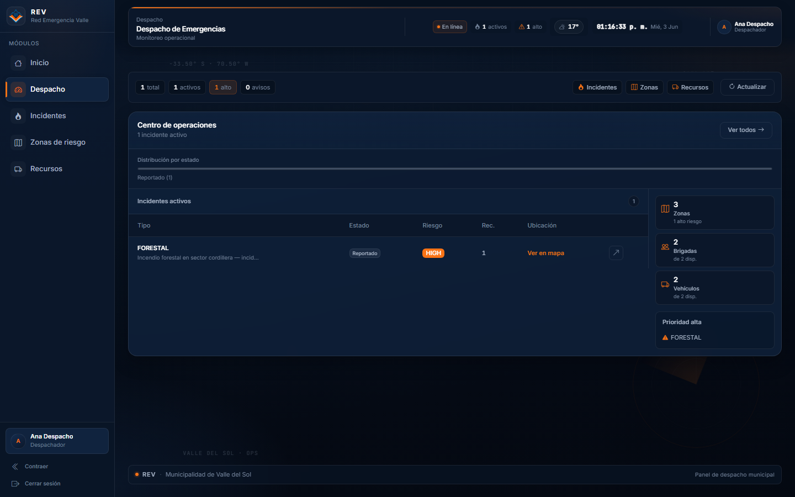
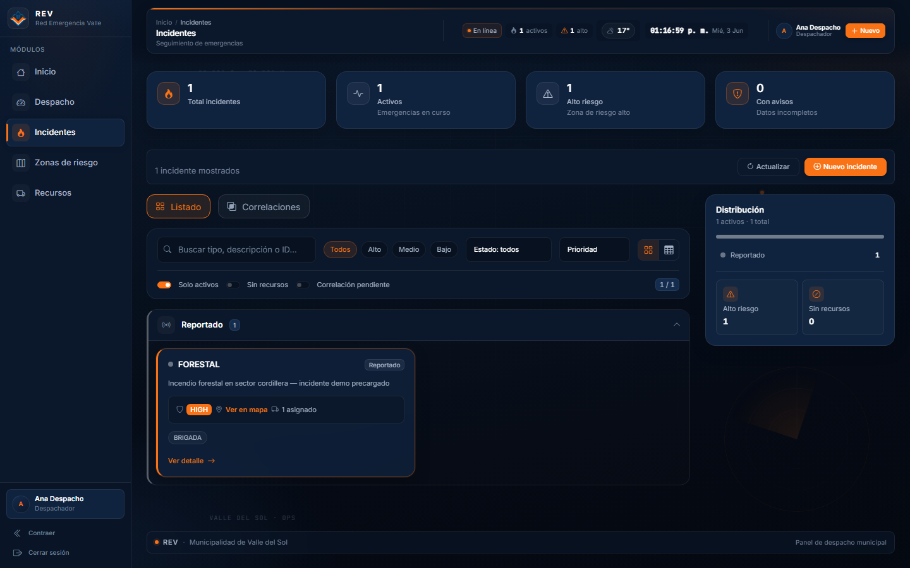
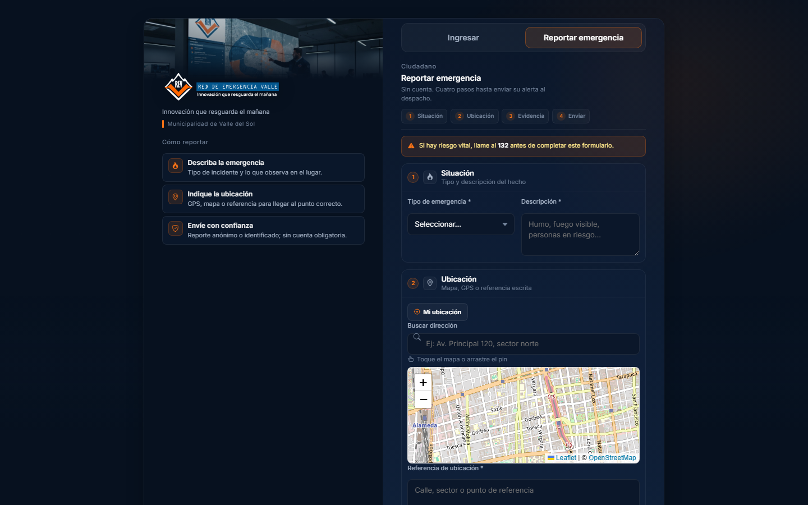
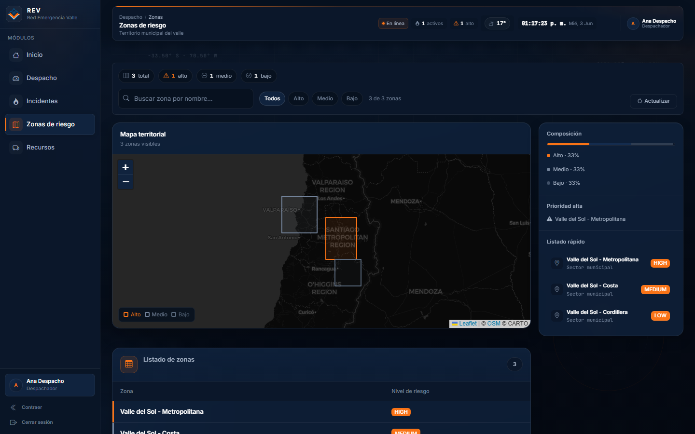
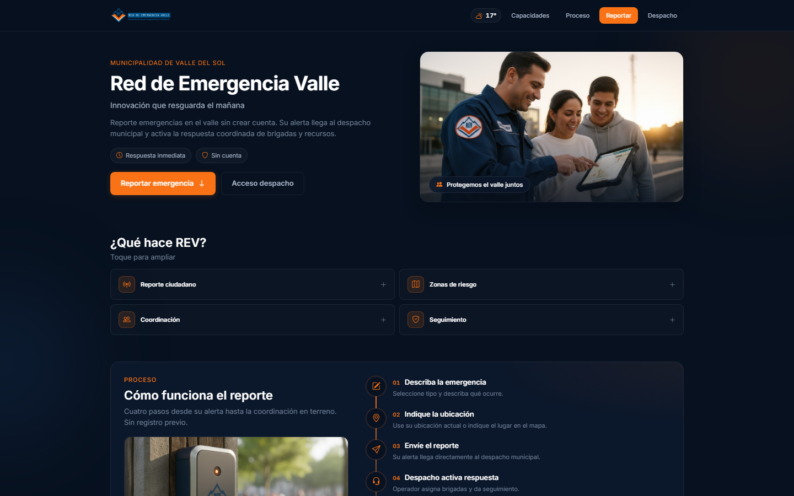

Conectividad que salva vidas
Informe técnico integral
Documentación verificada del ecosistema REV — monorepo rev-fullstack
Problema: La Municipalidad de Valle del Sol requiere coordinar emergencias (incendios forestales, incidentes urbanos y estructurales) con información dispersa, picos de demanda impredecibles y necesidad de respuesta rápida en terreno.
Solución: REV (*Red de Emergencia Valle*) es una plataforma de misión crítica que integra despacho municipal, brigadas y ciudadanía en un ecosistema de microservicios con interfaz web moderna.
Tecnologías: React 18 + Vite (frontend), Spring Boot 4 + Spring Cloud (backend), PostgreSQL/PostGIS, Keycloak, Eureka, Resilience4j, Docker.
Arquitectura: API Gateway perimetral, BFF de agregación, tres microservicios de dominio con base de datos independiente, descubrimiento de servicios y autenticación JWT centralizada.
Valor: Visión unificada del despacho, priorización por riesgo territorial, asignación de recursos, portal ciudadano sin registro y continuidad operativa parcial ante fallas de servicios secundarios.
Este informe documenta la arquitectura implementada, los patrones de diseño verificados en el repositorio rev-fullstack, la estrategia de branching, las prácticas de seguridad y observabilidad, y la experiencia de usuario del dashboard operacional. Toda afirmación técnica está respaldada por código, configuración o documentación existente en el monorepo.
| Dimensión | Estado en REV |
|---|---|
| Microservicios de negocio | 3 (ms-incidentes, ms-zonas-riesgo, ms-recursos) |
| BFF + Gateway | bff-rev :8085 · api-gateway :8080 |
| Identidad | Keycloak realm rev · roles Despachador, Brigadista, Admin |
| Resiliencia | Circuit Breaker Resilience4j en BFF + flag degraded |
| Frontend | SPA React — Despacho, Incidentes, Zonas, Recursos, Portal, Inicio |
Cada afirmación técnica se vincula a artefactos verificables del monorepo rev-fullstack: código fuente, migraciones Flyway, configuración Docker/Keycloak, capturas del dashboard y evidencia Git. Los capítulos 5, 9 y 13 incluyen figuras numeradas que corresponden a extractos reales del repositorio.
| Carpeta | Contenido |
|---|---|
businessdomain/ | Microservicios de negocio (incidentes, zonas, recursos) |
infraestructuredomain/ | Gateway, BFF, Eureka, Keycloak adapter, Spring Boot Admin |
frontend/rev-dashboard/ | SPA React — despacho y portal ciudadano |
docker/ · archetypes/ | Orquestación local y plantillas Maven |
REV surge como respuesta institucional ante la complejidad creciente de la gestión de emergencias en el territorio municipal de Valle del Sol.
La comuna enfrenta riesgos recurrentes — incendios forestales en zona metropolitana, incidentes urbanos y emergencias estructurales en la costa — que exigen coordinación entre despacho, brigadas y ciudadanía. Los modelos monolíticos tradicionales dificultan escalar ante picos de demanda y degradan la experiencia del operador bajo estrés operacional.
| Tipo | Descripción |
|---|---|
| General | Implementar una plataforma de gestión de emergencias basada en microservicios, con interfaz de despacho y portal ciudadano. |
| Específico 1 | Gestionar ciclo de vida de incidentes con reglas de transición de estado (ms-incidentes). |
| Específico 2 | Clasificar riesgo territorial con PostGIS y evaluación por coordenadas (ms-zonas-riesgo). |
| Específico 3 | Administrar y asignar brigadas, vehículos y herramientas (ms-recursos). |
| Específico 4 | Agregar datos en BFF con tolerancia a fallos para el dashboard React. |
Alcance: Monorepo Maven + frontend NPM, despliegue local con Docker Compose, autenticación Keycloak, documentación y pruebas en flujos críticos.
Limitaciones: Adaptador climático simulado (FakeWeatherAdapter); seguridad de roles aplicada en Gateway (no en anotaciones dentro de cada MS); transiciones de estado desde UI limitadas a creación y asignación de recursos; sin ELK/Prometheus en producción actual.
REV conecta al despacho municipal, las brigadas en terreno y la ciudadanía bajo el lema «Conectividad que salva vidas».
Plataforma de misión crítica para registrar, priorizar y coordinar emergencias. Capacidades verificadas en UI: dashboard operacional, listado y detalle de incidentes, mapa de zonas de riesgo, gestión de recursos, página de inicio con KPIs, portal público de reporte (/portal) y autenticación vía login.
| Perfil | Descripción | Funciones principales |
|---|---|---|
| Administrador | Supervisión y configuración de identidad | Acceso al panel; enlace a consola Keycloak (Sidebar — rol Admin); mismas capacidades operativas que despachador en UI actual |
| Despachador | Operador del centro de emergencias | Dashboard, incidentes, zonas, recursos, creación de incidentes, asignación de recursos (canManageIncidents) |
| Brigadista | Personal de terreno | Acceso autenticado al panel (rol validado en Gateway); consulta operacional según permisos frontend |
| Ciudadano | Vecino del valle | Reporte vía portal público (POST /api/public/incidentes) sin autenticación |
Capítulo central del informe. Describe la instancia concreta desplegada, no un catálogo teórico de patrones.
Estilo microservicios en monorepo Maven (rev-parent) con dominios businessdomain e infraestructuredomain. Comunicación síncrona REST; descubrimiento vía Eureka; perímetro con API Gateway; agregación en BFF; persistencia database per service.
| Componente | Puerto | Rol | Ruta en repo |
|---|---|---|---|
| Frontend React | 5173 | SPA despacho + portal | frontend/rev-dashboard/ |
| API Gateway | 8080 | Enrutamiento, filtro JWT | infraestructuredomain/api-gateway/ |
| BFF-REV | 8085 | Facade, agregación dashboard | infraestructuredomain/bff-rev/ |
| ms-incidentes | 8081 | Ciclo de vida incidentes | businessdomain/ms-incidentes/ |
| ms-zonas-riesgo | 8082 | Zonas y riesgo territorial | businessdomain/ms-zonas-riesgo/ |
| ms-recursos | 8083 | Brigadas, vehículos, asignaciones | businessdomain/ms-recursos/ |
| Keycloak Adapter | 8088 | Login, validación JWT, roles | infraestructuredomain/keycloak-adapter/ |
| Eureka Server | 8761 | Service discovery | infraestructuredomain/eureka-server/ |
| Spring Boot Admin | 8099 | Monitorización centralizada | infraestructuredomain/spring-boot-admin/ |
| Keycloak | 8090 | IAM — realm rev | docker/keycloak/rev-realm.json |
| Mecanismo | Implementación REV |
|---|---|
| REST | Controllers Spring en MS; WebClient reactivo en BFF hacia MS-INCIDENTES, MS-ZONAS-RIESGO, MS-RECURSOS |
| Discovery | Eureka — rutas Gateway lb://BFF-REV, lb://KEYCLOAK-ADAPTER |
| JWT | Keycloak emite token; Gateway AuthenticationFilter valida vía adapter /roles |
| Routing | /api/public/** sin JWT · /api/** con filtro · /auth/** → adapter |
El stack se levanta con docker compose --profile apps up. Cada microservicio empaqueta su JAR en imagen eclipse-temurin:21-jre-alpine y se registra en Eureka al arrancar. El frontend consume el Gateway en :18080 mediante proxy Vite en desarrollo.
| Perfil / servicio | Función operacional |
|---|---|
| PostgreSQL ×3 | Persistencia aislada por bounded context (incidentes, zonas PostGIS, recursos) |
Keycloak + realm rev | Identidad, roles y usuarios de prueba (despachador, brigadista) |
| Eureka + Gateway + BFF | Descubrimiento, perímetro JWT y agregación para el dashboard |
| MS de negocio | APIs REST independientes con Flyway y Actuator health,info |
Distinción académica: la arquitectura es la instancia concreta de REV; el arquetipo es el estilo organizacional reutilizable; el patrón resuelve un problema puntual dentro de ese estilo.
| Nivel | En REV | Ejemplo verificable |
|---|---|---|
| Arquitectura | Microservicios + Gateway + BFF + 3 BD | docker-compose.yml, diagrama cap. 3 |
| Arquetipo | MS Spring Cloud por capas; hexagonal parcial | Estructura controller/service/repository |
| Patrón | Factory, State, Facade, etc. | IncidentStateFactory, DashboardFacadeService |
Cada MS de negocio replica la misma organización:
| Capa | Paquete | Ejemplo (ms-incidentes) |
|---|---|---|
| Controller | controller/ | IncidenteController |
| Service | service/ | IncidenteService |
| Repository | repository/ | IncidenteRepository |
| Entity | entity/ | Incidente, TransicionEstado |
| DTO | dto/ | IncidenteRequest, IncidenteResponse |
| Exception | exception/ | BusinessRuleException, ApiExceptionHandler |
Infraestructura común en businessdomain/pom.xml: Eureka client, Actuator, Flyway, springdoc-openapi, PostgreSQL.
rev-microservice-archetypeRuta: archetypes/rev-microservice-archetype/. Genera un MS con @EnableDiscoveryClient, application.properties base y estructura alineada al monorepo.
mvn archetype:generate \ -DarchetypeGroupId=cl.duocuc.rev \ -DarchetypeArtifactId=rev-microservice-archetype \ -DartifactId=ms-nuevo
Figura 1
Arquetipo Maven REV
archetypes/rev-microservice-archetype/
<?xml version="1.0" encoding="UTF-8"?>
<archetype-descriptor
xmlns="https://maven.apache.org/plugins/maven-archetype-plugin/archetype-descriptor/1.1.0"
name="rev-microservice">
<fileSets>
<fileSet filtered="true" packaged="true">
<directory>src/main/java</directory>
<includes>
<include>**/*.java</include>
</includes>
</fileSet>
<fileSet filtered="true">
<directory>src/main/resources</directory>
<includes>
<include>**/*</include>
</includes>
</fileSet>
<fileSet filtered="true" packaged="true">
<directory>src/test/java</directory>
<includes>
<include>**/*.java</include>Descriptor del arquetipo custom para nuevos microservicios.
El módulo de zonas aplica ports & adapters para desacoplar la fuente de datos climáticos. El dominio depende de la interfaz WeatherDataPort; la implementación concreta (FakeWeatherAdapter) puede reemplazarse por una API meteorológica real sin modificar ZonaService.
| Concepto | Archivo | Rol |
|---|---|---|
| Puerto | port/WeatherDataPort.java | Contrato de obtención de condiciones |
| Adaptador | adapter/FakeWeatherAdapter.java | Implementación simulada para desarrollo |
| Orquestación | service/ZonaService.java | Inyecta el puerto; calcula riesgo territorial |
Patrones GoF y de conveniencia Spring verificados en código. Cada patrón se analiza con: objetivo, problema, ubicación en el repo, beneficio operacional y evidencia en figura.
IncidentStateFactory| Aspecto | Detalle |
|---|---|
| Objetivo | Resolver el handler de estado según EstadoIncidente actual |
| Problema | Evitar switch dispersos al validar transiciones |
| Ubicación | ms-incidentes/.../state/IncidentStateFactory.java |
| Beneficio | Registro automático vía Spring (List<IncidentStateHandler>) en EnumMap |
Figura 2
Factory Method — IncidentStateFactory
ms-incidentes/.../IncidentStateFactory.java
package cl.duocuc.rev.incidentes.state;
import cl.duocuc.rev.incidentes.entity.Incidente;
import cl.duocuc.rev.incidentes.exception.BusinessRuleException;
import cl.duocuc.rev.incidentes.model.EstadoIncidente;
import java.util.EnumMap;
import java.util.List;
import java.util.Map;
import org.springframework.http.HttpStatus;
import org.springframework.stereotype.Component;
@Component
public class IncidentStateFactory {
private final Map<EstadoIncidente, IncidentStateHandler> handlers;
public IncidentStateFactory(List<IncidentStateHandler> handlerList) {
handlers = new EnumMap<>(EstadoIncidente.class);
for (IncidentStateHandler handler : handlerList) {
handlers.put(handler.getEstado(), handler);
}
}
// …Resuelve handler por estado actual vía EnumMap.
| Clase | Estado | Regla destacada |
|---|---|---|
ReportadoState | REPORTADO | → EN_PROGRESO requiere georreferenciación (requireGeo) |
EnProgresoState | EN_PROGRESO | Transiciones hacia CONTROLADO / ESCALADO |
ControladoState | CONTROLADO | Avance hacia cierre |
EscaladoState | ESCALADO | Prioridad operacional |
Base común: BaseIncidentState.java — método requireGeo lanza BusinessRuleException si faltan coordenadas.
Figura 3
State — ReportadoState
ms-incidentes/.../state/ReportadoState.java
package cl.duocuc.rev.incidentes.state;
import cl.duocuc.rev.incidentes.entity.Incidente;
import cl.duocuc.rev.incidentes.model.EstadoIncidente;
import org.springframework.stereotype.Component;
@Component
public class ReportadoState extends BaseIncidentState {
@Override
public EstadoIncidente getEstado() {
return EstadoIncidente.REPORTADO;
}
@Override
public void validarTransicion(Incidente incidente, EstadoIncidente destino) {
if (destino == EstadoIncidente.EN_PROGRESO) {
requireGeo(incidente);
return;
}
deny(destino);
}
// …Transición EN_PROGRESO exige georreferenciación.
| Aspecto | Detalle |
|---|---|
| Puerto | WeatherDataPort.obtenerCondiciones(lat, lng) |
| Adaptador | FakeWeatherAdapter — datos determinísticos, fuente FAKE_WEATHER_ADAPTER |
| Beneficio | Permite sustituir por API meteorológica real sin cambiar ZonaService |
Figura 4
Adapter — FakeWeatherAdapter
ms-zonas-riesgo/adapter/
package cl.duocuc.rev.zonas.port;
import cl.duocuc.rev.zonas.dto.WeatherDataDto;
public interface WeatherDataPort {
WeatherDataDto obtenerCondiciones(double lat, double lng);
}
package cl.duocuc.rev.zonas.adapter;
import cl.duocuc.rev.zonas.dto.WeatherDataDto;
import cl.duocuc.rev.zonas.port.WeatherDataPort;
import org.springframework.stereotype.Component;
@Component
public class FakeWeatherAdapter implements WeatherDataPort {
@Override
public WeatherDataDto obtenerCondiciones(double lat, double lng) {
double temperatura = 20.0 + Math.abs(lat % 10);
// …Puerto + adaptador simulado intercambiable.
DashboardFacadeServiceAgrega incidente + zona de riesgo + recursos en un único DashboardResponse con flag degraded.
return DashboardResponse.builder()
.incidente(incidente)
.zonaRiesgo(zonaRiesgo)
.recursos(recursosResult.recursos())
.degraded(recursosResult.degraded())
.build();
Figura 5
Facade — DashboardFacadeService
bff-rev/.../DashboardFacadeService.java
o;
import cl.duocuc.rev.bff.dto.RecursoDto;
import cl.duocuc.rev.bff.dto.ZonaRiesgoDto;
import io.github.resilience4j.circuitbreaker.annotation.CircuitBreaker;
import java.util.Collections;
import java.util.List;
import java.util.Map;
import java.util.UUID;
import lombok.RequiredArgsConstructor;
import org.springframework.beans.factory.annotation.Autowired;
import org.springframework.context.annotation.Lazy;
import org.springframework.stereotype.Service;
@Service
@RequiredArgsConstructor
public class DashboardFacadeService {
private final IncidenteClientService incidenteClientService;
private final ZonaRiesgoClientService zonaRiesgoClientService;
private final RecursosClientService recursosClientService;
private final CorrelacionFacadeService correlacionFacadeService;
private final ZonaRiesgoCache zonaRiesgoCache;
// …Agregación con @CircuitBreaker y flag degraded.
Interfaces en cada MS: IncidenteRepository, ZonaRepository, BrigadaRepository, etc. Abstraen persistencia PostgreSQL/PostGIS.
Figura 6
Repository — IncidenteRepository
ms-incidentes/.../IncidenteRepository.java
package cl.duocuc.rev.incidentes.repository;
import cl.duocuc.rev.incidentes.entity.Incidente;
import cl.duocuc.rev.incidentes.model.EstadoIncidente;
import java.time.LocalDateTime;
import java.util.List;
import java.util.Optional;
import java.util.UUID;
import org.springframework.data.jpa.repository.JpaRepository;
import org.springframework.data.jpa.repository.Query;
import org.springframework.data.repository.query.Param;
public interface IncidenteRepository extends JpaRepository<Incidente, UUID> {
Optional<Incidente> findByFolio(String folio);
List<Incidente> findByIncidenteCanonicoId(UUID incidenteCanonicoId);
long countByIncidenteCanonicoId(UUID incidenteCanonicoId);
@Query("""
SELECT i FROM Incidente i
// …Spring Data JPA + consulta geoespacial para correlación.
@Builder en DTOs del BFF y MS, p. ej. WeatherDataDto.builder(), DashboardResponse.builder(), ZonaRiesgoDto.builder().
Figura 7
Builder — DashboardResponse
bff-rev/dto/DashboardResponse.java
package cl.duocuc.rev.bff.dto;
import java.util.List;
import lombok.AllArgsConstructor;
import lombok.Builder;
import lombok.Data;
import lombok.NoArgsConstructor;
@Data
@Builder
@NoArgsConstructor
@AllArgsConstructor
public class DashboardResponse {
private IncidenteDto incidente;
private ZonaRiesgoDto zonaRiesgo;
private List<RecursoDto> recursos;
private boolean degraded;
}DTO agregado del BFF con @Builder Lombok.
| Patrón | Problema | Implementación | Ubicación |
|---|---|---|---|
| Microservicios | Acoplamiento monolítico | 3 MS de dominio independientes | businessdomain/ |
| API Gateway | Exponer un único punto de entrada | Spring Cloud Gateway :8080 | api-gateway/application.yml |
| BFF | Adaptar API al frontend | Agregación dashboard y operaciones | bff-rev/ |
| Circuit Breaker | Cascada de fallos | Resilience4j — instancias zonasRiesgo, recursos | DashboardFacadeService + application.properties |
| Service Discovery | Localizar instancias dinámicas | Eureka + lb:// en Gateway y WebClient | eureka-server/ |
| Database per Service | Acoplamiento de datos | 3 PostgreSQL/PostGIS separados | docker-compose.yml |
| Cache Aside | Fallback sin perder contexto | ZonaRiesgoCache en fallback del circuit breaker | bff-rev/.../cache/ZonaRiesgoCache.java |
| JWT Authentication | Identidad distribuida | Keycloak + adapter + filtro Gateway | AuthenticationFilter.java |
resilience4j.circuitbreaker.instances.zonasRiesgo.slidingWindowSize=10 resilience4j.circuitbreaker.instances.zonasRiesgo.failureRateThreshold=50 resilience4j.circuitbreaker.instances.zonasRiesgo.waitDurationInOpenState=5s
Actuator expone circuitbreakers en BFF: management.endpoints.web.exposure.include=health,info,circuitbreakers
Documentado en docs/CONTRIBUTING.md. GitFlow simplificado con dos ramas principales.
| Rama | Propósito |
|---|---|
main | Código estable — demo y entrega. Solo merges desde dev validados |
dev | Desarrollo activo diario |
feature/* | Recomendado para features aisladas (documentado en guías del equipo) |
Commits atómicos: convención [ TIPO ]: descripción — FEAT, FIX, DOCS, INFRA, etc. Un commit = una unidad lógica verificable.
CI: .github/workflows/ci.yml ejecuta build Maven y tests en push/PR a main y dev.
dev o ramas feature/* con commits atómicos.dev con revisión de pares antes de merge.main solo cuando el sprint o entrega EVA está validado.docs/ versionadas junto al código.La correlación entre commits, ramas y funcionalidades permite defender oralmente cada decisión técnica con evidencia en GitHub.
Figura 8
Ramas Git — rev-fullstack
GitFlow simplificado: main estable, dev integración.
Figura 9
Historial reciente — rama dev
Trazabilidad entre funcionalidad, documentación e integración continua.
main, canaliza el trabajo colaborativo en dev y deja evidencia auditable para la evaluación.| Principio | Evidencia en REV |
|---|---|
| SRP / separación de capas | Controller → Service → Repository en cada MS |
| Inyección de dependencias | Constructor injection con Lombok @RequiredArgsConstructor |
| DRY en infraestructura | Parent POM compartido; archetype Maven |
| Nomenclatura | Prefijo ms-, paquetes cl.duocuc.rev.* |
| Validación de esquema | ddl-auto=validate + Flyway migrations |
| Manejo de errores | ApiExceptionHandler, BusinessRuleException |
| Tests | IncidentStateFactoryTest, ZonaServiceTest, tests BFF |
| Documentación | README por módulo; OpenAPI springdoc en MS |
| Frontend modular | Componentes por dominio (inicio/, incidentes/, zonas/) |
El parent POM rev-parent centraliza versiones de Spring Boot 4, Spring Cloud y dependencias compartidas. Cada módulo expone su README con puerto, endpoints y orden de arranque. Los DTOs de frontera evitan filtrar entidades JPA al exterior; las excepciones de negocio se traducen a respuestas HTTP coherentes mediante ApiExceptionHandler.
Las migraciones Flyway son la única fuente de verdad del esquema (ddl-auto=validate). En frontend, el cliente API centraliza rutas hacia el Gateway y normaliza errores para StateView y toasts.
rev — roles: Despachador, Brigadista, Adminrev-frontend — flujo password grant (dev) vía adapterJwtService.javaAuthenticationFilter exige Bearer y consulta KEYCLOAK-ADAPTER/roles| Ruta Gateway | JWT | Uso |
|---|---|---|
/api/public/** | No | Portal ciudadano |
/api/** | Sí | Panel despacho |
/auth/** | N/A | Login, roles, refresh |
Nota: Los microservicios de negocio no implementan @PreAuthorize; el perímetro de seguridad está en Gateway + adapter — decisión documentada que concentra políticas de acceso y simplifica los MS de dominio.
BFF-REV o microservicios./api/public/**) permiten reporte ciudadano sin token, con validación en MS.Figura 10
Keycloak realm rev
docker/keycloak/rev-realm.json
{
"realm": "rev",
"enabled": true,
"verifyEmail": false,
"loginWithEmailAllowed": true,
"registrationEmailAsUsername": false,
"roles": {
"realm": [
{ "name": "Despachador" },
{ "name": "Brigadista" },
{ "name": "Admin" },
{ "name": "Ciudadano" }
]
},
"users": [
{
"username": "despachador",
"enabled": true,
"email": "despachador@valle.local",
"emailVerified": true,
"firstName": "Ana",
"lastName": "Despacho",
// …Roles Despachador, Brigadista, Admin, Ciudadano importados al arranque.
Figura 11
AuthenticationFilter — Gateway
api-gateway/.../AuthenticationFilter.java
package cl.duocuc.rev.gateway.filter;
import com.fasterxml.jackson.core.JsonProcessingException;
import com.fasterxml.jackson.databind.JsonNode;
import com.fasterxml.jackson.databind.ObjectMapper;
import lombok.extern.slf4j.Slf4j;
import org.springframework.cloud.gateway.filter.GatewayFilter;
import org.springframework.cloud.gateway.filter.OrderedGatewayFilter;
import org.springframework.cloud.gateway.filter.factory.AbstractGatewayFilterFactory;
import org.springframework.http.HttpHeaders;
import org.springframework.http.HttpStatus;
import org.springframework.stereotype.Component;
import org.springframework.web.reactive.function.client.WebClient;
import org.springframework.web.reactive.function.client.WebClientResponseException;
import org.springframework.web.server.ResponseStatusException;
@Slf4j
@Component
public class AuthenticationFilter extends AbstractGatewayFilterFactory<AuthenticationFilter.Config> {
private final WebClient.Builder webClientBuilder;
private final ObjectMapper objectMapper;
// …Filtro JWT perimetral vía KEYCLOAK-ADAPTER/roles.
Figura 12
JwtService — JWK Set
keycloak-adapter/.../JwtService.java
package cl.duocuc.rev.keycloak.service;
import cl.duocuc.rev.keycloak.config.KeycloakProperties;
import com.auth0.jwk.Jwk;
import com.auth0.jwk.UrlJwkProvider;
import java.net.URI;
import java.net.URL;
import lombok.RequiredArgsConstructor;
import org.springframework.stereotype.Service;
@Service
@RequiredArgsConstructor
public class JwtService {
private final KeycloakProperties keycloakProperties;
public Jwk getJwk(String kid) throws Exception {
URL url = URI.create(keycloakProperties.getJwkSetUri()).toURL();
UrlJwkProvider provider = new UrlJwkProvider(url);
String certsId = keycloakProperties.getCertsId();
if (certsId != null && !certsId.isBlank()) {
return provider.get(certsId.trim());
// …Validación RSA256 con claves públicas del realm Keycloak.
| Capacidad | Estado | Evidencia |
|---|---|---|
| Spring Boot Actuator | Implementado | health,info en MS; circuitbreakers en BFF |
| Spring Boot Admin | Implementado | Puerto 8099, @EnableAdminServer |
| Logging explícito | Parcial | Gateway INFO; @Slf4j en filtro y AuthController |
| Métricas Prometheus | No implementado | — |
| Tracing distribuido | No implementado | — |
| Auditoría de negocio | Parcial | Tabla transiciones_estado en ms-incidentes |
Las transiciones de estado de incidentes se persisten en transiciones_estado (Flyway V1), proporcionando trazabilidad del ciclo de vida. El BFF marca respuestas degraded: true cuando un fallback de Circuit Breaker activa, visible en UI como «información parcial».
| Stack | Propósito |
|---|---|
| ELK (Elasticsearch, Logstash, Kibana) | Centralizar logs de 8+ servicios |
| Prometheus + Grafana | Métricas JVM, latencia WebClient, estado CB |
| Grafana Loki | Logs ligero complementario a Prometheus |
| OpenTelemetry | Tracing entre Gateway → BFF → MS |
| Microservicio | BD | Motor | Puerto host |
|---|---|---|---|
| ms-incidentes | rev_incidentes | PostgreSQL 16 | 5432 |
| ms-zonas-riesgo | rev_zonas | PostGIS 16 | 5433 |
| ms-recursos | rev_recursos | PostgreSQL 16 | 5434 |
| Tabla | MS | Campos clave |
|---|---|---|
incidentes | incidentes | id UUID, tipo, estado, lat, lng, descripcion, reportante_uuid |
transiciones_estado | incidentes | incidente_id, estado_anterior, estado_nuevo, created_at |
zonas | zonas | nombre, nivel_riesgo, min/max lat/lng |
condiciones_climaticas | zonas | zona_id, temperatura, humedad, viento |
brigadas | recursos | nombre, capacidad, estado |
vehiculos | recursos | patente, tipo, estado |
asignaciones | recursos | incidente_id UUID, brigada_id, vehiculo_id, activa |
Nota: la referencia incidente_id en asignaciones es UUID lógico cross-service, no FK entre bases de datos.
Figura 13
Flyway V1 — ms-incidentes
V1__init_incidentes.sql
CREATE TABLE incidentes (
id UUID PRIMARY KEY,
tipo VARCHAR(50) NOT NULL,
estado VARCHAR(30) NOT NULL,
lat DOUBLE PRECISION,
lng DOUBLE PRECISION,
descripcion VARCHAR(500) NOT NULL,
reportante_uuid UUID NOT NULL,
created_at TIMESTAMP NOT NULL DEFAULT NOW(),
updated_at TIMESTAMP NOT NULL DEFAULT NOW()
);
CREATE TABLE transiciones_estado (
id BIGSERIAL PRIMARY KEY,
incidente_id UUID NOT NULL REFERENCES incidentes(id),
estado_anterior VARCHAR(30),
estado_nuevo VARCHAR(30) NOT NULL,
created_at TIMESTAMP NOT NULL DEFAULT NOW()
);Esquema inicial y tabla transiciones_estado.
| Token | Valor | Uso |
|---|---|---|
--rev-bg | #07111F | Fondo principal |
--rev-surface | #142C4E | Tarjetas y paneles |
--rev-orange | #F97316 | Acento institucional, CTAs |
--rev-text-secondary | #A7B4C7 | Texto de apoyo |
| Tipografía | Inter, Segoe UI | theme.css |
| Módulo | Ruta | Función UX |
|---|---|---|
| Inicio | /inicio | Hero + KPIs + panorama + prioridades + showcase REV |
| Despacho | / | Tabla operacional del día, tiles zonas/recursos |
| Incidentes | /incidentes | Filtros, vista cards/tabla, rail de distribución |
| Zonas | /zonas | Mapa Leaflet + listado + riesgo |
| Recursos | /recursos | Brigadas, vehículos, herramientas |
| Portal | /portal | Reporte ciudadano público |
theme.css para jerarquía visual.Evidencia visual del dashboard con datos reales del stack local.
Figura 14
Dashboard Despacho — panel operacional

Captura real de / con sesión despachador: KPIs, incidente activo y módulos Zonas/Recursos.
Figura 15
Módulo Incidentes — listado y correlaciones

Captura real de /incidentes: filtros, vista listado y panel de distribución.
Figura 16
Login — pestaña Reportar emergencia

Captura real de /login: formulario por pasos, mapa OSM y guía ciudadana.
Galería de evidencias integradas desde el repositorio rev-fullstack: extractos de código, configuración, assets UI e historial Git verificables en el monorepo.
| Figura | Captura requerida | Análisis esperado |
|---|---|---|
| 1–7 | Patrones de diseño (cap. 5) | Código fuente en IDE |
| 8–9 | GitHub branching | main, dev, PR |
| 10–12 | Seguridad Keycloak + JWT | Realm, filtro, adapter |
| 13 | Base de datos | Flyway / PostgreSQL |
| 14–16b | Frontend UX | Pantallas operativas |
| 17 | Eureka Dashboard | Instancias registradas :8761 |
| 18 | Spring Boot Admin | Health de microservicios :8099 |
| 19 | Swagger / OpenAPI | Documentación MS incidentes |
| 20 | Docker Compose | docker compose ps servicios activos |
Las figuras UX (14–16b) corresponden a capturas del dashboard en ejecución con datos reales del stack Docker. Las figuras de infraestructura (17–20) muestran configuración de discovery, monitorización, API y orquestación. Todas son reproducibles clonando el repositorio y siguiendo el README raíz.
Figura 14
Despacho — centro de operaciones
Vista /: KPIs del día, incidente activo (FORESTAL) y acceso rápido a Zonas y Recursos. El despachador obtiene situación operacional sin navegar múltiples sistemas.
Figura 15
Incidentes — seguimiento
Vista /incidentes: filtros por estado/tipo, listado con correlaciones y panel de distribución geográfica.
El módulo Zonas integra Leaflet con datos PostGIS del microservicio ms-zonas-riesgo. Login y Portal habilitan reporte sin registro previo mediante POST /api/public/incidentes, alineado al rol Ciudadano del realm Keycloak.
En operación, el despachador consulta riesgo territorial antes de asignar brigadas; el vecino reporta desde terreno con georreferenciación obligatoria, alimentando el mismo ciclo de vida gestionado por ms-incidentes.
Figura 15b
Zonas de riesgo — mapa Leaflet

Mapa /zonas con polígonos de riesgo, marcadores Leaflet y correlación visual con incidentes activos.
Figura 16
Login — reporte ciudadano
Pestaña Reportar en /login: formulario por pasos, georreferenciación OSM y guía para el vecino.
Figura 16b
Portal ciudadano

Landing /portal: acceso directo al flujo de reporte para vecinos sin cuenta municipal.
Evidencia de service discovery, monitorización, contrato REST y despliegue local. Complementa los diagramas del capítulo 3 con extractos del repositorio.
Figura 17
Eureka Server
eureka-server/application.properties
spring.application.name=eureka-server
server.port=${SERVER_PORT:18761}
eureka.client.register-with-eureka=false
eureka.client.fetch-registry=false
eureka.server.enable-self-preservation=true
# Gateway: lb://BFF-REV, lb://KEYCLOAK-ADAPTERService discovery en puerto 8761 (host 18761).
Figura 18
Spring Boot Admin
docker-compose.yml + @EnableAdminServer
# spring-boot-admin :18099 → 8099
depends_on:
- eureka-serverMonitor centralizado de Actuators registrados en Eureka.
Figura 19
OpenAPI — IncidenteController
ms-incidentes/.../IncidenteController.java
package cl.duocuc.rev.incidentes.controller;
import cl.duocuc.rev.incidentes.dto.IncidenteRequest;
import cl.duocuc.rev.incidentes.dto.IncidenteResponse;
import cl.duocuc.rev.incidentes.dto.PublicIncidenteRequest;
import cl.duocuc.rev.incidentes.service.IncidenteService;
import java.util.List;
import java.util.UUID;
import lombok.RequiredArgsConstructor;
import org.springframework.http.HttpStatus;
import org.springframework.http.MediaType;
// …Contrato REST del bounded context incidentes — incluye reporte público y transiciones.
Figura 20
Docker Compose — stack REV
docker-compose.yml
name: rev
x-java-app: &java-app
image: eclipse-temurin:21-jre-alpine
environment:
SPRING_PROFILES_ACTIVE: docker
services:
postgres-incidentes:
image: postgres:16-alpine
environment:
POSTGRES_DB: rev_incidentes
// …Orquestación local: PostgreSQL ×3, Keycloak, Eureka, MS, BFF y Gateway (perfil apps).
REV demuestra dominio de arquitectura de microservicios con evidencia verificable: monorepo Maven estructurado, tres bounded contexts con persistencia independiente, BFF resiliente, Gateway con JWT, descubrimiento Eureka y frontend React alineado al negocio municipal.
FakeWeatherAdapter.La estrategia main / dev, commits atómicos y documentación en docs/ sostienen el trabajo grupal exigido en EVA2, facilitando defensa oral individual con trazabilidad al código.
Síntesis final: REV es una plataforma de emergencias municipal implementada con stack moderno, patrones documentados y evidencia en repositorio — apta para auditoría técnica académica y evolución hacia producción institucional.